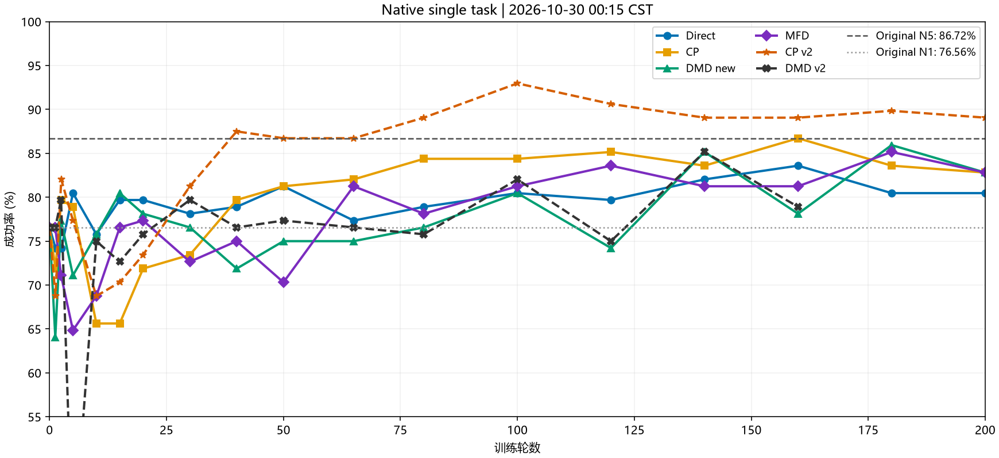
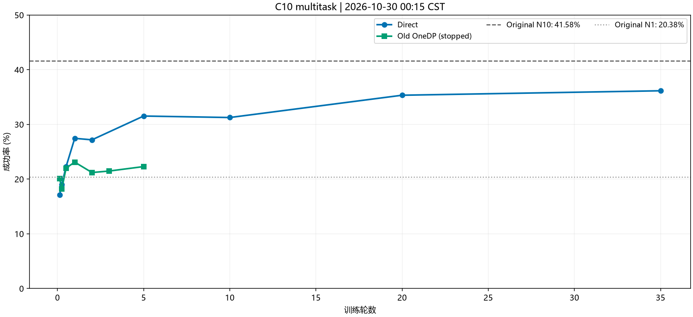
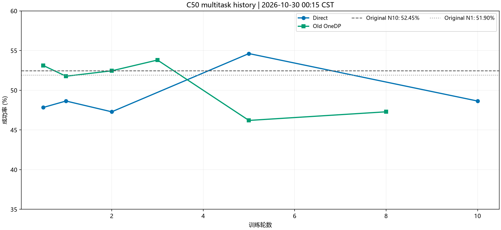

2026-10-30 00:15 CST · 健康快照 2026-10-30 00:20 CST · 本轮未新增删除
| 卡 | 工作 | 当前进度 | 剩余估计 |
|---|---|---|---|
| 4/5 | 50任务 Direct，C10 | 48,260 / 55,650（43.36 / 50轮） | 15–17 h → RLT |
| 6/7 | 单任务 DMD v2 | 2,110 / 2,600（162.3 / 200轮） | 1–2 h → 下表队列 |
新完成：CP v2 200轮，末代89.1%，最佳93.0%。旧CP末代82.8%，这次末代高6.25个百分点；v2与旧版的训练预算/学习率历程也不同，暂不把全部差异归因于维度mask。DMD v2最新78.9%、最好85.2%，曲线有波动。
原生单任务参考：原始N5为86.7%，原始N1为76.6%。每点128回合。网页横轴均为训练轮数。

| 方法 | 最新完整点 | 最好完整点 |
|---|---|---|
| Direct | 80.5% (103/128) | 83.6% |
| CP | 82.8% (106/128) | 86.7% |
| DMD new | 82.8% (106/128) | 85.9% |
| MFD | 82.8% (106/128) | 85.2% |
| CP v2 | 89.1% (114/128) | 93.0% |
| DMD v2 | 78.9% (101/128) | 85.2% |
当前Direct最新完整评估36.1%（133/368）；同协议原始N10为41.6%，N1为20.4%。当前后续训练尚未产生新评估点，不能把最新训练步误当成新成功率。


| 实验 | 状态 | 本段耗时 |
|---|---|---|
| DMD v2 → 200轮 | 运行中 | 1–2 h |
| MFD v2 → 200轮 | 待运行 | 11–14 h |
| Direct 200→400轮 | 待运行 | 5–6.5 h |
| CP v2 200→400轮 | 待运行 | 5–6.5 h |
| DMD new 200→400轮 | 待运行 | 6–8 h |
| MFD 200→400轮 | 待运行 | 9–11 h |
| FQL-fix → 200轮 | 待运行 | 9–12 h |
| 逐卡RLT | 候补 | 无固定截止预算 |
全队列粗估48–60小时。按近期更新时间＋实际128回合评估约12分钟/点＋重载时间估算；不含异常重试和容量不足跳过。CP v2续400已替换旧CP续400。
RLT仅4–7卡：四路等待正常；完整恢复点225 / 225 / 25 / 300，配置和环境文件存在。唯一CPU调度器已重载并能读取新登记；需当前v2、后续队列对应owner全部退出且目标卡空闲才接管。
0–3卡本次计算和图形进程快照均空；4–7卡为我方训练。其他用户只读查看，未见其GPU训练。活动卡约67–75 GiB显存/卡，最高温度72℃，未触发热降频。
RAM可用 1651.1 / 2015.5 GiB；load 7.32。CPU、内存、IO压力未见持续等待。根盘余 214.8 GiB。
网卡错误/丢包未增加；既有17890代理访问GitHub、HF成功，GitHub直连本次成功，HF直连仍失败。最近6小时内核筛查未见OOM、GPU Xid、磁盘I/O错误；常见挖矿进程名/端口筛查无命中，这只是有限范围检查。
Home余 138.6 GiB；Data余 152.9 GiB。未来400轮队列按“最近2个＋本段最佳”最多约130 GiB新权重，Home仍偏紧，另需一次保存的临时余量。
| 推荐顺序 | 可释放 | 保留 / 代价 |
|---|---|---|
| Home：旧单任务100轮点 | 57.7 GiB | 保留各200轮末代/最佳与400轮续训依赖；放弃原100轮点续训。 |
| Data：闲置Dojo / OpenWAM下载权重 | 57.9 GiB | 以后运行Dojo需重新下载，当前π0.5蒸馏与RLT不依赖这些文件。 |
| Data：Direct C10早期评估点 | 12.8 GiB | 留当前完整续训点及最佳38955，早期两点评估曲线保留；删除会失去这两点续训。 |
上述精确候选合计约 128.4 GiB，尚未删除。另有Home旧Dojo真实视频约83 GiB可单独讨论；它们是原始素材，不能按可重建缓存直接删。UV共享硬链接和大量仍打开的Ray日志未计入推荐。
写满时会怎样：后续400轮/FQL-fix队列新增保存空间预检；不足时记失败、清理本阶段自己的进程、继续下一方法。失败回执可落根盘临时目录，避免Home/Data写满连回执都写不了。若后续方法也没空间，会继续跳过，最后按卡接RLT；这不等于凭空增加空间。RLT自身仍需要能保存的空间。
13项针对性CPU测试通过。当前健康训练未重启；保护权重、最新完整续训点、RLT依赖与日志曲线均保留。精确候选清单
本地8194网页服务已恢复。九种统计图及解释 · slot25完整视频、12阶段图与双曲线。
bkp材料目录包含可编辑图、信号表、选定轨迹的原始动作/观测/控制数据和短视频，以及总体关系对照。